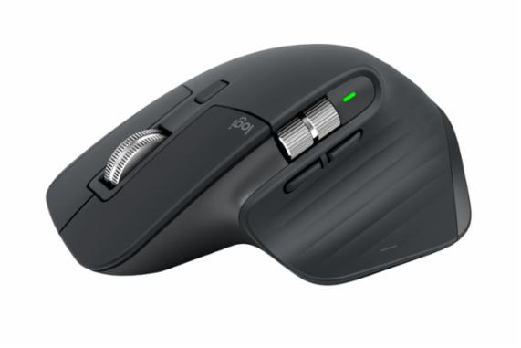
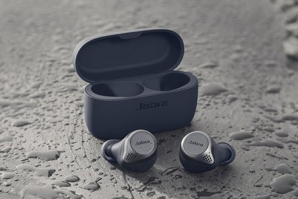
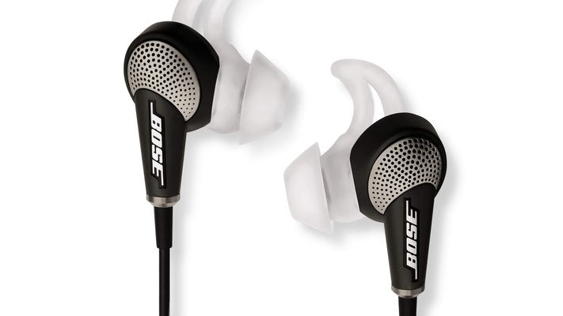
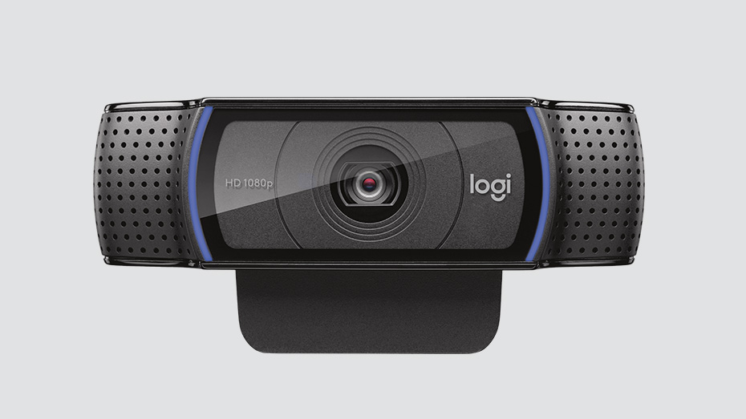
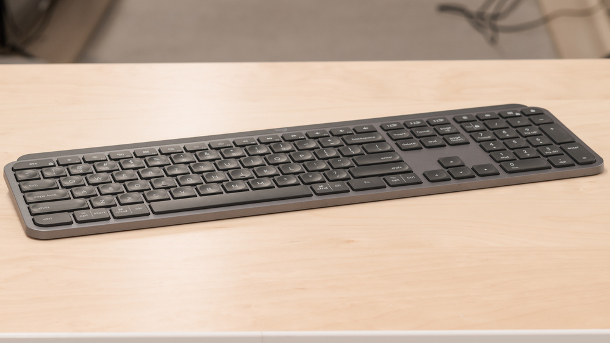
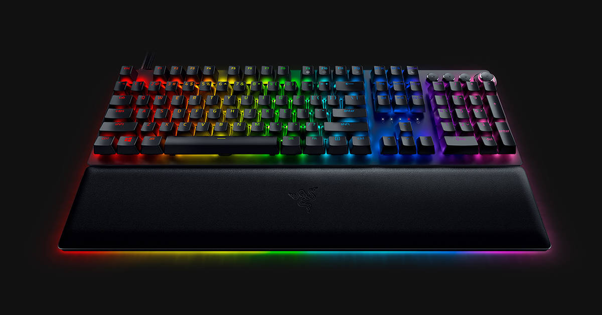

Accessories such as a keyboard and mouse may be vital in order to operate your computer. Others such as headphones, cameras, graphics tablets and barcode readers might be useful for specialist tasks or simply for entertainment purposes. The recommended accessories will be seperate into work and gaming as both types reuired different specification for it to serves its purpose.

Logitech MX Master 3
SPECIFICATIONS Max DPI: 4,000Buttons: SixSize: 4.9 x 3.3 x 2.0 inchesWeight: 5.0 ounces
The Logitech MX Master 3 is the best mouse, at least on the productivity front, as well as the best wireless mouse. It's comfortable, feature-rich and lasts an amazingly long time on a single charge. This sleek gray peripheral is the latest iteration of Logitech's MX Master series, and everything the company has learned from the previous iterations is on full display. The buttons give satisfying clicks, the grip is pleasant to hold and the horizontal thumb wheel makes scrolling through documents a breeze. The software is where the MX Master 3 shines, however, as it comes preinstalled with a variety of different functionalities for popular programs. From Photoshop to Excel, Logitech has already predicted how you might want to use the horizontal scroll wheel and gesture controls, and developed optimized profiles for each program. You can also use the handy Logitech Flow feature, which lets you drag and drop files between two totally different computers, as though they were connected via USB.
The Razer Deathadder has an all-around fantastic shape for all sorts of grips and hand sizes, and I've spent hundreds of hours playing games, using Photoshop, and browsing the Internet with it. Despite years of iterations, Razer never messes with the Deathadder's shape. There's no reason to. The Deathadder V2 uses a 20,000 DPI Razer Focus+ optical sensor, and while big numbers don't necessarily equate to quality, here they do. Razer's newest tech delivers flawless tracking, even if you move the mouse as fast as humanly possible. For the majority of games and gamers, the Deathadder V2 is a fantastic mouse. Its design is simple, with two perfectly placed, generously sized thumb buttons. It also has an excellent optical mouse sensor that will work on both hard and cloth pads, and it has the ultimate body shape for a claw or hybrid claw/palm grip.

Jabra Elite Active 75t
SPECIFICATIONS = Size and Weight: 0.8 x 0.7 x 0.6 inches, 0.2 ounces (per bud)Battery Life (Rated): 7.5 hours; 28 hours (with charging case)Bluetooth Range: 30 feet (9 meters)Water Resistant: Yes
An all-around performer that hits every mark, the Elite Active 75t currently stands as the best workout headphones. Jabra somehow managed to scale down the design, while increasing battery life (7.5 hours per charge, 28 hours with charging case) and the IPX rating (IP57), making these buds waterproof, dust- and sweat-resistant. Jabra also sells the buds in a variety of striking colorways, including Copper Black, Grey, Mint, Navy, Sienna, and Titanium Black. Even with its smaller form, the Elite Active 75t affords great comfort and on-ear stability. You’ll also enjoy the same vibrant audio associated with the Elite series, only this time the bass has been fine-tuned to achieve full, detailed sound. You can further customize the audio through Jabra's app, and there's also active noise cancellation to block out ambient noise when exercising in rowdy environments.

Bose QuietComfort 20
SPECIFICATIONS = Battery life: 16 hours on a single charge | Connection: 3.5mm | Noise cancelling: Yes | Weight: 44g | Compatibility : Android, PS4, Xbox, Switch, PC | Mic: Yes
The QuietComfort 20 earbuds are the first in-ear noise cancelling headphones from Bose, which means that you'll need to charge them up if you want to get the benefit of the feature. The built-in rechargeable battery offers a generous 16-hours of listening time, but you can of course carry on gaming with passive mode if you forget to juice them up. While drowning out your surroundings so you can focus on the action is a definite plus, if you're at home with a bustling household, you may need to tune into what's going on from time-to-time, which is where the Aware mode comes in handy; with the touch of a button, two of the four noise-cancelling microphones will allow the sounds of your environment to pass through to your ears, so you can stay immersed while having the guarantee of not missing out on anything important.

Logitech C920
SPECIFICATIONS = Resolution: 1080pFeatures: Background removal, Low-light correction, 720p/60fps video while streaming, Stereo audio, autofocus, auto light correction
The Logitech C920 has been one of the best webcams on the market since its release in January 2012, consistently beating out rival products that promise more affordability or better performance – and for good reason. This is a beloved favorite across the entire spectrum of streamers, content creators, and office professionals alike, and when cost, quality, and performance are all calculated, the C920 is still the best overall achiever across the board. With crisp 1080p HD resolution and fantastic lighting and color detection at an affordable price, this fan-favorite webcam hits a spot in the market that struggles to see any substantial competition and is still one of the best performing webcams on the market today.
Logitech has managed to dethrone one of its own webcams, the C922, from its consistent top spot with its new StreamCam. The StreamCam was designed with content creators in mind, as it can easily switch from landscape to portrait by merely rotating the camera. The smart autofocus and exposure take a lot of the guesswork out of setting up the perfect shot. Logitech essentially made a better, upgraded version of the C922. The fact it records at a steady 1080p/60fps means this webcam will help produce some genuinely great looking video. The StreamCam manages to focus consistently, even in low-light environments—like a bedroom or a closet. We don't judge here. Even though the StreamCam is one of the pricier non-4K options out there, the picture quality alone is worth every penny, especially if you're serious about your game streams or video content.

Logitech MX Keys
SPECIFICATIONS = Accessories TypeBluetooth Device Battery Type/LifeUSB-C rechargable - 10 days - or up to 5 months with backlighting off. BrandLogitech Company Websitehttps://www.logitech.com/en-us Size0.81 x 16.9 inches Weight28.6 ounces
The best office keyboard that we've tested is the Logitech MX Keys. This full-size keyboard has a fairly small footprint and shouldn't take much space on your desk since it has minimal borders that keep it small without feeling cramped. It feels very well-built, as the frame is made of metal and the keys are made from good-quality plastic. It uses standard scissor switches with a very short pre-travel and satisfying tactile feedback. Typing on it feels fairly light and responsive, and the indented keys help to reduce the number of typos. Typing noise is quiet so it shouldn't bother those around you, even if you work in an open-office environment. Also, the keyboard has white backlighting that's very useful to work in the dark.

Razer Huntsman v2 Analog
SPECIFICATIONS = Interface: WiredKeyboard backlighting: YesSwitches: Analog mechanical
Combining the latest optical technology and Razer’s analog mechanical key switches, the Razer Huntsman v2 Analog is good enough to get a five-star rating from us. That’s under-selling it. This gaming keyboard delivers the best typing and gaming experience of any keyboard we’ve tested in the last few months, with extremely satisfying tactile feedback and a wrist rest that’s designed to let you game for longer. As far as keyboards go, it is sitting on the expensive side of things, but it’s definitely worth it.